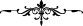

Hz. Peygamber (s.a.) vefat edince, Hz. Fâtıma validemiz şöyle dedi:
– “Vah, kendisini dâvet eden Rabbine icâbet eden babacığım! Vah, mekânı Cennetü’l-
Firdevs olan babacığım!”
Hz. Peygamber defnedilince Fâtıma Validemiz: “Yâ Enes, Peygamberimizin üzerine
toprak atmak hoşunuza gitti mi?” dedi. Fâtıma Validemiz, Hz. Peygamber’in vefâtından
altı ay sonra dünyadan âhirete göç eyledi.
Ey kardeş, dünya kimseye kalmaz.
Dünyada gönlünü Hakk’a bağla, başkasına değil!
Akıllı olanların, ölüm gelip çatmazdan evvel tedariklerini tamamlamaları
gerekmektedir. Tâ ki kıyâmet günü insanların gözü önünde rezîl rüsvây olmasınlar.
Kıyâmet gününün, peygamberlerin ve velîlerin bile korktuğu bir gün olduğunu bilen biri
nasıl olur da amel-i sâlihe koşmaz?!
Bir gün ki o günde fiil ve sözlerden sorulur.
O gün ulülazm peygamberler bile titrer ve yorulur.
Kıyâmet öyle bir yer ki, peygamberlerin bile içi burulur.
“Gel bakalım” denildiğinde, günaha ne özür bulunur!
Hâl-i pürmelâlini, gözönünde bulundurmadan hangi mâzerete sığınarak bu günahları
irtikâb edip duruyorsun? Evet, kurtuluş ve murâda nâiliyet, ancak araştırmaya dayalı bir
îman yani îman-ı tahkiki ile mümkündür.
Şeyh Necmüddîn Kübrâ şöyle der: “Taklîdî îmana itibar edilmez. Taklitçi biri, taklid
ettiği kişi olmadığı zaman, îmanından döner. Ana-babasını, hocasını veya
ülkesindekileri taklid ederek îman etmiş bulunan birinin kalbine henüz îman
girmemiştir. Göğsü henüz İslâm nûru ile aydınlanmamıştır. Öldüğü zaman, taklid ettiği
şeylerden ayrılacağı için, meleklerin: “Rabbin kimdir?” sorusuna cevap veremez. Ve
“Bilmiyorum” der. Bu kişi, “Muhammed (s.a.) hakkında ne diyorsun?” denildiğinde;
“İnsanlar ne derse ben de onu söylerdim.” der. Melekler de ona: “Ne bir şey bildin ne
de okudun! “ derler.
Bugün âlimlerin sözlerini dinle.
Ki yarın münkereynin suallerinden korkmayasın.
Bu dünyadaki değerli nefesini (nefsini) ganîmet bil!
Zira kuşu olmayan kafes değersizdir.
Yani ruhsuz bir cesedin hiçbir değeri yoktur. Bu sebeple akıllı kişinin ruhu, ten
kafesinden çıkmazdan önce nefeslerinin değerini ganîmet bilmesi lâzımdır.